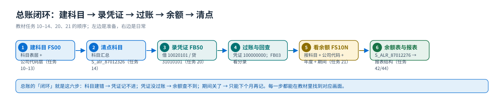

流程① 总账
FS00 建科目 → FB50 录凭证 → 显示科目汇总 → FS10N 看余额
总账篇回答「科目怎么建、凭证怎么录、余额怎么看」这一段：FS00 建总账科目 → S_alr_87012326 清点科目 → FB50 录凭证 → FB03 回查 → FS10N 看余额。教材 FI 的任务 10–14、20、21 就是这一篇的现场。
教学场景与前置条件
{kind=link}

| 前置 | 内容 | 教材任务 |
|---|---|---|
| 组织 | 公司代码 C999 / 会计科目表 A999 / 会计年度变式 ZF / 记账期间变式 P999 | 01–05、16–17 |
| 规则 | 字段状态变式 Z001（含 ZEXP/ZGBS/ZMMA/ZRAA/ZREV 五个字段状态组）、科目组 RAA/BSA/PLA | 06–09 |
| 编码 | 凭证号码范围已复制到 C999（否则无法过账） | 15 |
| 税务 | 销项税 MWS → 21710102、进项税 → 21710101 的自动税务过账 | 21 |
| 环境值 | 会计年度 2021、第 3 期间；货币 RMB；公司代码 C999 | （教材画面） |
SKA1 科目表层（跨公司代码：科目号、名称、科目组、科目表）＋SKB1 公司代码层（字段状态组、统驭科目、只能自动记帐、货币）＝你在 FS00 里看到的一张屏幕；描述文本在 SKAT。
教材任务 10 的原文说得很清楚：科目组和会计科目表相关、和公司代码无关；字段状态组和公司代码相关。这句话能解释 FS00 里为什么有「科目表」和「公司代码」两列状态。
手顺① 建总账科目 FS00（任务 10：一般资产负债科目）
新建一般资产负债科目
FS00事务代码：FS00

画面 1教材《S4.docx》· FI 任务 10 新建一般资产负债科目 · 原图 01_1_image55.png 
画面 2教材《S4.docx》· FI 任务 10 新建一般资产负债科目 · 原图 02_1_image56.png 原书提示31410101 利润分配－未分配利润原书提示31010101 实收资本
教材此处画面只有两张（FS00 入口与科目维护画面），后面 11–13 的科目都按同一套路建：FS00 → 输入科目号 → 选科目组 → 填名称 → 切到公司代码层 → 选字段状态组 → 保存。
手顺② 建统驭科目与材料采购科目（任务 11、12）
新建统驭科目－应收/应付
FS00其他总账科目创建如现金总账的创建

画面 3教材《S4.docx》· FI 任务 11 新建统驭科目－应收/应付 · 原图 01_1_image57.png 
画面 4教材《S4.docx》· FI 任务 11 新建统驭科目－应收/应付 · 原图 01_2_image58.png 创建应收账款 FS00 11310101

画面 5教材《S4.docx》· FI 任务 11 新建统驭科目－应收/应付 · 原图 02_1_image59.png 
画面 6教材《S4.docx》· FI 任务 11 新建统驭科目－应收/应付 · 原图 02_2_image60.png
| 输入值（教材画面）：字段 | 值 |
|---|---|
| 事务代码 | FS00 |
新建材料采购科目
FS00解释:材料采购科目也是创建一个总账会计科目。这个科目需要"逐笔逐清"的中间过渡科目--材料采购科目。也叫 GR/IR(收货/收发票)。在收货时系统自动生成会计凭证。借:库存 贷:材料采购.而收发票时，系统也自动生成会计凭证。 借:材料采购，贷:应付账款.两边的"材料采购" 凭证行相互匹配的过程叫"清账"，对上的叫"已清项"，对不上的叫"未清项"，未清项反映了货或者发票有一方未到。这是个风险点，其他需要用"清账"来管理的科目大多是一些中间过渡科目，如银行未达科目。或者是反映债权债务(但又不用应付应收模块管理)科目，如长期借款。客户和供应商明细账就是采用清账来管理的。
创建材料采购－GR/IR 科目
画面 7教材《S4.docx》· FI 任务 12 新建材料采购科目 · 原图 01_1_image67.png 
画面 8教材《S4.docx》· FI 任务 12 新建材料采购科目 · 原图 01_2_image68.png 
画面 9教材《S4.docx》· FI 任务 12 新建材料采购科目 · 原图 01_3_image69.png
| 输入值（教材画面）：字段 | 值 |
|---|---|
| 事务代码 | FS00 |
手顺③ 建损益科目（任务 13：一批 18 个）
新建损益科目
FS0051010101 主营业务收入-自制产品

画面 10教材《S4.docx》· FI 任务 13 新建损益科目 · 原图 01_1_image70.png 
画面 11教材《S4.docx》· FI 任务 13 新建损益科目 · 原图 01_2_image71.png 
画面 12教材《S4.docx》· FI 任务 13 新建损益科目 · 原图 01_3_image72.png 
画面 13教材《S4.docx》· FI 任务 13 新建损益科目 · 原图 02_1_image76.png 
画面 14教材《S4.docx》· FI 任务 13 新建损益科目 · 原图 02_2_image77.png 创建生产成本－原材料消耗
41010101
画面 15教材《S4.docx》· FI 任务 13 新建损益科目 · 原图 03_1_image80.png
| 输入值（教材画面）：字段 | 值 |
|---|---|
| 事务代码 | FS00 |
手顺④ 显示科目汇总（任务 14）
显示科目汇总
解释：创建上述步骤中创建的会计科目

画面 16教材《S4.docx》· FI 任务 14 显示科目汇总 · 原图 01_1_image143.png 原书提示S_alr_87012326
手顺⑤ 录入总账凭证 FB50（任务 20）
输入总帐科目凭证
FB50FB03解释:：在总帐中输入会计凭证，记录我们收到 2 800 000 的实收资本，存入工商银行账户。事务代码 FB50

画面 17教材《S4.docx》· FI 任务 20 输入总帐科目凭证 · 原图 01_1_image160.png 10020101 31010101
输入不同公司的凭证可点击公司代码按钮
画面 18教材《S4.docx》· FI 任务 20 输入总帐科目凭证 · 原图 02_1_image161.png 
画面 19教材《S4.docx》· FI 任务 20 输入总帐科目凭证 · 原图 03_1_image162.png 可预制，也可以直接保存后过账（下图为FB03查询得到的结果）

画面 20教材《S4.docx》· FI 任务 20 输入总帐科目凭证 · 原图 04_1_image163.png
2.800,00。SAP 的数字格式是点=千位分隔、逗号=小数，所以画面是 2 800.00 元。课堂上要让学生先读格式再读数字，否则会以为系统少了三个零。手顺⑥ 显示总账科目余额 FS10N（任务 21）
显示总帐科目余额
FS10N事务代码 FS10N

画面 21教材《S4.docx》· FI 任务 21 显示总帐科目余额 · 原图 01_1_image164.png 
画面 22教材《S4.docx》· FI 任务 21 显示总帐科目余额 · 原图 01_2_image165.png 
画面 23教材《S4.docx》· FI 任务 21 显示总帐科目余额 · 原图 02_1_image166.png 1、 维护自动税收过帐

画面 24教材《S4.docx》· FI 任务 21 显示总帐科目余额 · 原图 03_1_image167.png 定义销项税

画面 25教材《S4.docx》· FI 任务 21 显示总帐科目余额 · 原图 04_1_image168.png
| 输入值（教材画面）：字段 | 值 |
|---|---|
| 定义进项税 | 21710101 |
字段读法（FS00 与 FB50）
| 区域/字段 | 在哪 | 含义与教材值 |
|---|---|---|
| 科目号 / 描述 | FS00 抬头 | 教材 8 位（如 10020101 银行存款）；SAP 内部按 10 位存，画面里可能显示 0010020111，是同一个科目 |
| 科目组 | FS00 科目表层 | RAA 统驭科目（11300000–21699999）/ BSA 资产负债 / PLA 损益 |
| 字段状态组 | FS00 公司代码层 | ZGBS 一般资产负债科目 / ZRAA 统驭科目 / ZREV 收入科目 / ZMMA 材料采购（GR/IR）/ ZEXP 费用科目 |
| 统驭科目 | FS00 公司代码层 | 客户 11310101、供应商 21210101；教材任务 11 建这两个科目本身 |
| 只能自动记帐 | FS00 公司代码层 | 任务 43 给收入科目 51010101 打勾，禁止手工记账 |
| 凭证日期 / 过账日期 / 期间 | FB50 抬头 | 凭证日期是单据日期，过账日期决定落在哪个期间；教材凭证都是 03.03.2021、期间 3 |
| 记账码 + 科目 + 金额 | FB50 行项目 | 40 = 借方总账、50 = 贷方总账；教材画面 40 / 10020101 / 2.800,00 与 50 / 31010101 / 2.800,00 |
| 货币 / 换算 | FB50 抬头 | 公司代码货币 RMB；跨币种时会显示换算日期与汇率 |
| 预制 vs 过账 | FB50 保存按钮 | 预制 = 草稿（不改余额），过账才更新余额（教材任务 20 原文） |
FSS0（公司代码层）对照字段状态组，再到 OBC4 看该字段状态组的明细（教材未演示 OBC4，路径见配置页 B 组）。常见错误与排查
| 症状 | 原因 | 处理 |
|---|---|---|
| FS00 里公司代码状态是空的 / 存不了盘 | 只维护了科目表层，没切到公司代码层 | 在 FS00 的「公司代码」列补字段状态组、货币、统驭科目 |
| 过账报「科目未在公司代码下维护」 | 科目表层有、公司代码层缺 | 同上；或用 FSS0 补 |
| FB50 保存报「凭证类型/号码范围不存在」 | 凭证号码范围没复制到 C999 | 先做任务 15（复制凭证号码范围到公司代码，源公司 0001 → 目标 C999） |
| 报「期间已关闭」 | 记账期间变式 P999 在前台把期间关了 | 任务 18 打开该期间，或改过账日期 |
| 报「只能自动记帐」 | 该科目勾了只能自动记账（如收入科目） | 这是设计如此（任务 43）；改为由系统自动过账的业务产生 |
| FS10N 查不到金额 | 凭证是预制状态，没有过账 | 把预制凭证过账（FBV0，教材未演示） |
| 借贷不平衡存不了盘 | 金额或借贷标识填错 | 检查行项目的记账码（40 借 / 50 贷）与金额 |
上下游关系：总账科目的质量决定 MM/SD 能不能自动记账 —— 主数据页 讲科目组与字段状态组，流程页 讲各模块的分录，期末页 讲余额怎么变成报表。